Week 1 | Day 2
Data Manipulation, Visualization & Relational Data
Today’s Arc
Where We’re Going
Yesterday was about the substrate — files, paths, bytes, formats, URLs.
Today is about working with data once it’s in R.
Three interconnected topics, one dataset throughout:
| Block | Topic | Time |
|---|---|---|
| 1 | Data manipulation — dplyr |
~40 min |
| 2 | Data visualization — ggplot2 |
~40 min |
| 3 | Relational data + tidy format — tidyr |
~30 min |
We’ll use gapminder for most examples — clean, familiar, and ships with R. Every technique applies directly to the USGS streamflow data in Lab 1.
Gapminder Data
Gapminder Data
“Gapminder Foundation is a non-profit venture registered in Stockholm, Sweden, that promotes sustainable global development and achievement of the United Nations Millennium Development Goals by increased use and understanding of statistics and other information about social, economic and environmental development at local, national and global levels.”
glimpse(gapminder)
#> Rows: 1,704
#> Columns: 6
#> $ country <fct> "Afghanistan", "Afghanistan", "Afghanistan", "Afghanistan", …
#> $ continent <fct> Asia, Asia, Asia, Asia, Asia, Asia, Asia, Asia, Asia, Asia, …
#> $ year <int> 1952, 1957, 1962, 1967, 1972, 1977, 1982, 1987, 1992, 1997, …
#> $ lifeExp <dbl> 28.801, 30.332, 31.997, 34.020, 36.088, 38.438, 39.854, 40.8…
#> $ pop <int> 8425333, 9240934, 10267083, 11537966, 13079460, 14880372, 12…
#> $ gdpPercap <dbl> 779.4453, 820.8530, 853.1007, 836.1971, 739.9811, 786.1134, …Part 1: Data Manipulation
Tidy Data: The Assumed Shape

Tidy data follows three rules: each variable is a column, each observation is a row, each value is a cell. Every tidyverse tool assumes this shape.
When your data doesn’t conform, you fix the data — not the tools.
The Grammar of Data Manipulation
dplyr provides a consistent set of verbs for data manipulation:
| Verb | Does |
|---|---|
select() |
Picks variables based on their names. |
filter() |
Picks cases based on their values. |
mutate() |
Add or transform columns |
summarize() |
Reduces multiple values down to a single summary. |
arrange() |
Reorder rows |
group_by() |
Apply operations by group |
These all combine naturally. Learning the verbs is learning the language.

A Note on Subsetting
Before we use these verbs, let’s ground ourselves in base R subsetting — it’s what dplyr builds on. Understanding the foundation makes the syntax sugar more transparent.
You already know base R subsetting. Here’s the vocabulary:
Connection to SQL
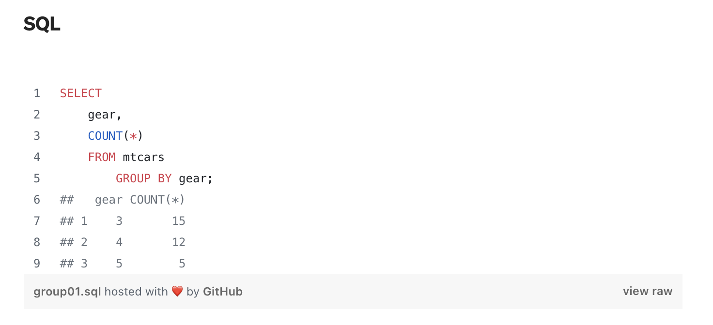
SQL (Structured Query Language) provides a language for databases to store, retrieve, and manage data.
Used in all major databases – PostgreSQL, MySQL, SQL Server, and more.
Essential for data jobs – Analysts, scientists, and engineers rely on it.
Utilized everywhere in business & tech – From small apps to big companies to governments
Now Let’s Apply Them
We’ll cover the core concepts of SQL indirectly:
filter()=WHEREselect()=SELECTmutate()= computed columnssummarize()+group_by()=GROUP BY+ aggregate functionsarrange()=ORDER BY
The grammar transfers directly. SQL is the language of databases; dplyr is the language of R data frames. They solve the same class of problems.
Now let’s walk through each verb with concrete examples. You’ll see how they work in isolation, then how they compose into powerful pipelines.
filter() — Keep Rows by Condition
filter()takes logical (binary) expressions and returns the rows in which all conditions are TRUE.filter()does NOT impact columnsthe
data.frameis ALWAYS the fist argumentLets find all rows in
gapminderthat in which the life expectancy is less then 40
Subsetting rows by conditions
- Lets find all observations in
gapminderwhere the year is 2007, and the life expectancy is less then 40:
filter() — The %in% Operator
filter(gapminder,
country %in% c("Iraq", "Iran", "Afghanistan"),
year > 2005)
#> # A tibble: 3 × 6
#> country continent year lifeExp pop gdpPercap
#> <fct> <fct> <int> <dbl> <int> <dbl>
#> 1 Afghanistan Asia 2007 43.8 31889923 975.
#> 2 Iran Asia 2007 71.0 69453570 11606.
#> 3 Iraq Asia 2007 59.5 27499638 4471.Tip
%in% tests membership in a vector — much cleaner than chaining | (OR) conditions. You’ll use it constantly with site numbers, HUC codes, and state names in water resources work. %in% maps directly to SQL IN.
How filter() Works: Boolean Vectors
Under the hood, filter() creates a boolean vector (all TRUE or FALSE) and keeps only the rows where the condition is TRUE.
Base R subsetting:
# Create a boolean vector
lifeExp_condition <- gapminder$lifeExp < 40
table(lifeExp_condition)
#> lifeExp_condition
#> FALSE TRUE
#> 1580 124
# This is what filter() does internally
head(gapminder[lifeExp_condition, ])
#> # A tibble: 6 × 6
#> country continent year lifeExp pop gdpPercap
#> <fct> <fct> <int> <dbl> <int> <dbl>
#> 1 Afghanistan Asia 1952 28.8 8425333 779.
#> 2 Afghanistan Asia 1957 30.3 9240934 821.
#> 3 Afghanistan Asia 1962 32.0 10267083 853.
#> # ℹ 3 more rowsUsing filter():
# Much cleaner syntax
filter(gapminder, lifeExp < 40)
#> # A tibble: 124 × 6
#> country continent year lifeExp pop gdpPercap
#> <fct> <fct> <int> <dbl> <int> <dbl>
#> 1 Afghanistan Asia 1952 28.8 8425333 779.
#> 2 Afghanistan Asia 1957 30.3 9240934 821.
#> 3 Afghanistan Asia 1962 32.0 10267083 853.
#> # ℹ 121 more rowsNote
filter() is cleaner and more readable, but it’s doing exactly what base R subsetting does: keeping rows where the condition is TRUE, dropping rows where it’s FALSE or NA.
select() — Keep Columns by Name
select() can be used to remove columns. The ! negates a selection
Select columns:
select() — Drop & Pattern Matching
Drop a column:
Match by pattern (1):
# Start with "life"
select(gapminder, starts_with("life"))
#> # A tibble: 1,704 × 1
#> lifeExp
#> <dbl>
#> 1 28.8
#> 2 30.3
#> 3 32.0
#> # ℹ 1,701 more rows
# Contain "pop"
select(gapminder, contains("pop"))
#> # A tibble: 1,704 × 1
#> pop
#> <int>
#> 1 8425333
#> 2 9240934
#> 3 10267083
#> # ℹ 1,701 more rowsselect() — Base R Equivalence
Under the hood, select() is doing column subsetting — the same operation as base R.
Base R column subsetting:
Note
select() is syntactic layer on top of base R’s column subsetting. It’s more readable and composable with pipes.
select() Helpers — tidyselect Functions
Beyond explicit column names, use tidyselect helpers to match columns by pattern:
# Select columns starting with a pattern
select(gapminder, starts_with("life"))
#> # A tibble: 1,704 × 1
#> lifeExp
#> <dbl>
#> 1 28.8
#> 2 30.3
#> 3 32.0
#> # ℹ 1,701 more rows
# Select columns ending with a pattern
select(gapminder, ends_with("cap"))
#> # A tibble: 1,704 × 1
#> gdpPercap
#> <dbl>
#> 1 779.
#> 2 821.
#> 3 853.
#> # ℹ 1,701 more rows
# Select columns containing a substring
select(gapminder, contains("pop"))
#> # A tibble: 1,704 × 1
#> pop
#> <int>
#> 1 8425333
#> 2 9240934
#> 3 10267083
#> # ℹ 1,701 more rowsTip
These patterns are especially useful for water data where columns follow naming conventions: site_no, site_name, discharge_cfs, temp_c. You’ll select all temperature columns with starts_with("temp_"). You can select all of a year with contains(1991). Use this to your advantage when naming things!!
The |> Pipe Operator
The pipe passes the object on the left into the first argument of the function on the right:
Without pipe:
Keyboard shortcut: Cmd+Shift+M (Mac) / Ctrl+Shift+M (Windows)
The pipe is what makes dplyr readable — it lets you build a chain of operations that reads like a sentence:
|> across verbs
|> across verbs
|> across verbs
|> across verbs
#> # A tibble: 11 × 4
#> pop gdpPercap year country
#> <int> <dbl> <int> <fct>
#> 1 168546719 7958. 1997 Brazil
#> 2 179914212 8131. 2002 Brazil
#> 3 190010647 9066. 2007 Brazil
#> # ℹ 8 more rows|> across verbs
#> # A tibble: 5 × 4
#> pop gdpPercap year country
#> <int> <dbl> <int> <fct>
#> 1 102479927 10742. 2002 Mexico
#> 2 108700891 11978. 2007 Mexico
#> 3 272911760 35767. 1997 United States
#> # ℹ 2 more rowsgapminder |>
select(pop, gdpPercap, year, country) |>
filter(pop > 100000000, gdpPercap > 5000) |>
filter(year > 1995) |>
filter(country %in% c("United States", "Mexico"))
#> # A tibble: 5 × 4
#> pop gdpPercap year country
#> <int> <dbl> <int> <fct>
#> 1 102479927 10742. 2002 Mexico
#> 2 108700891 11978. 2007 Mexico
#> 3 272911760 35767. 1997 United States
#> # ℹ 2 more rowsmutate() — Add New Columns
mutate()defines and inserts new variables into a existingdata.framemutate()builds new variables sequentially so you can reference earlier ones when defining later ones- In the
gapminderdataset we have a population and gdp per capita variable. Lets calculate the GDP of each county
Mutate
Mutate
#> # A tibble: 1,704 × 7
#> country continent year lifeExp pop gdpPercap gdp
#> <fct> <fct> <int> <dbl> <int> <dbl> <dbl>
#> 1 Afghanistan Asia 1952 28.8 8425333 779. 6567086330.
#> 2 Afghanistan Asia 1957 30.3 9240934 821. 7585448670.
#> 3 Afghanistan Asia 1962 32.0 10267083 853. 8758855797.
#> # ℹ 1,701 more rowsMutate
#> # A tibble: 1,704 × 6
#> country continent year lifeExp pop gdp
#> <fct> <fct> <int> <dbl> <int> <dbl>
#> 1 Afghanistan Asia 1952 28.8 8425333 6567086330.
#> 2 Afghanistan Asia 1957 30.3 9240934 7585448670.
#> 3 Afghanistan Asia 1962 32.0 10267083 8758855797.
#> # ℹ 1,701 more rowsmutate() — Base R Equivalence
Under the hood, mutate() is column assignment — the same operation as base R.
Using mutate():
gapminder |>
mutate(gdp = pop * gdpPercap,
gdpPercap = NULL)
#> # A tibble: 1,704 × 6
#> country continent year lifeExp pop gdp
#> <fct> <fct> <int> <dbl> <int> <dbl>
#> 1 Afghanistan Asia 1952 28.8 8425333 6567086330.
#> 2 Afghanistan Asia 1957 30.3 9240934 7585448670.
#> 3 Afghanistan Asia 1962 32.0 10267083 8758855797.
#> # ℹ 1,701 more rowsNote
mutate() builds on base R assignment but allows you to chain operations with the pipe and reference newly created columns within the same call.
transmute() — Keep Only New Columns
transmute() is like mutate(), but it drops all other columns — you’re left with only what you explicitly create.
# mutate() keeps everything
gapminder |>
mutate(gdp = pop * gdpPercap)
#> # A tibble: 1,704 × 7
#> country continent year lifeExp pop gdpPercap gdp
#> <fct> <fct> <int> <dbl> <int> <dbl> <dbl>
#> 1 Afghanistan Asia 1952 28.8 8425333 779. 6567086330.
#> 2 Afghanistan Asia 1957 30.3 9240934 821. 7585448670.
#> 3 Afghanistan Asia 1962 32.0 10267083 853. 8758855797.
#> # ℹ 1,701 more rowsTip
Use transmute() when you want to extract a subset of computed columns in one go — cleaner than mutate() followed by select().
Conditional Mutations with if_else()
When you need to compute values based on a condition, use if_else():
gapminder |>
filter(year == 2007) |>
mutate(income_level = if_else(gdpPercap > 10000, "high", "low")) |>
select(country, gdpPercap, income_level) |>
head(8)
#> # A tibble: 8 × 3
#> country gdpPercap income_level
#> <fct> <dbl> <chr>
#> 1 Afghanistan 975. low
#> 2 Albania 5937. low
#> 3 Algeria 6223. low
#> # ℹ 5 more rowsUse sumarize() to reduce a data.set
summarize()takes a dataset with n observations, computes requested values, and returns a dataset with 1 observation.summarize()can compute summary statistics for one or more columns in adata.frame.- The first argument in
summarize()is the data.frame.
summarize
summarize
#> # A tibble: 1,704 × 7
#> country continent year lifeExp pop gdpPercap gdp
#> <fct> <fct> <int> <dbl> <int> <dbl> <dbl>
#> 1 Afghanistan Asia 1952 28.8 8425333 779. 6567086330.
#> 2 Afghanistan Asia 1957 30.3 9240934 821. 7585448670.
#> 3 Afghanistan Asia 1962 32.0 10267083 853. 8758855797.
#> # ℹ 1,701 more rowssummarize
#> # A tibble: 1 × 2
#> gpd sd
#> <dbl> <dbl>
#> 1 186809560507. 714029666918.Useful summary functions: mean(), median(), sd(), min(), max(), sum(), n(), n_distinct(), quantile()
arrange() — Reorder Rows
- orders the rows of a
data.framerows by the values of selected columns.
Decreasing or Increasing?
Decreasing or Increasing?
Decreasing or Increasing?
#> # A tibble: 142 × 6
#> country continent year lifeExp pop gdpPercap
#> <fct> <fct> <int> <dbl> <int> <dbl>
#> 1 Swaziland Africa 2007 39.6 1133066 4513.
#> 2 Mozambique Africa 2007 42.1 19951656 824.
#> 3 Zambia Africa 2007 42.4 11746035 1271.
#> # ℹ 139 more rowsDecreasing or Increasing?
#> # A tibble: 142 × 6
#> country continent year lifeExp pop gdpPercap
#> <fct> <fct> <int> <dbl> <int> <dbl>
#> 1 Japan Asia 2007 82.6 127467972 31656.
#> 2 Hong Kong, China Asia 2007 82.2 6980412 39725.
#> 3 Iceland Europe 2007 81.8 301931 36181.
#> # ℹ 139 more rowsMulti sort (order matters)
Multi sort (order matters)
Multi sort (order matters)
Multi sort (order matters)
Combining operations
Combining operations
Combining operations
Combining operations
Combining operations
#> # A tibble: 142 × 4
#> year country gdpPercap rank
#> <int> <fct> <dbl> <int>
#> 1 2007 Norway 49357. 1
#> 2 2007 Kuwait 47307. 2
#> 3 2007 Singapore 47143. 3
#> # ℹ 139 more rowsgroup_by() + summarize() — Split-Apply-Combine
Have you ever needed:
- Mean wind speed by storm type?
- Average discharge by HUC?
- Case counts by state?
group_by() adds grouping structure. mutate() and summarize() honor it:
gapminder |>
mutate(gdp = pop * gdpPercap) |>
group_by(year) |>
summarize(mean_gdp = mean(gdp),
sd_gdp = sd(gdp))
#> # A tibble: 12 × 3
#> year mean_gdp sd_gdp
#> <int> <dbl> <dbl>
#> 1 1952 49561190904. 197218416124.
#> 2 1957 62649777593. 233501965317.
#> 3 1962 77495568413. 279956456279.
#> # ℹ 9 more rowsgroup_by() — More Examples
Life expectancy range by year in Europe:
group_by() + mutate() — Within-Group Calculations
lag() within groups — life expectancy gain since baseline year:
gapminder |>
filter(continent == "Europe") |>
group_by(country) |>
arrange(year) |>
mutate(lifeExp_gain = lifeExp - first(lifeExp)) |>
filter(year == max(year)) |>
arrange(-lifeExp_gain) |>
head(10)
#> # A tibble: 10 × 7
#> # Groups: country [10]
#> country continent year lifeExp pop gdpPercap lifeExp_gain
#> <fct> <fct> <int> <dbl> <int> <dbl> <dbl>
#> 1 Turkey Europe 2007 71.8 71158647 8458. 28.2
#> 2 Albania Europe 2007 76.4 3600523 5937. 21.2
#> 3 Bosnia and Herzegovina Europe 2007 74.9 4552198 7446. 21.0
#> # ℹ 7 more rowsWorst Single-Year Drop in Life Expectancy
Worst Single-Year Drop in Life Expectancy
Worst Single-Year Drop in Life Expectancy
Worst Single-Year Drop in Life Expectancy
#> # A tibble: 1,704 × 4
#> # Groups: country, continent [142]
#> country year continent lifeExp
#> <fct> <int> <fct> <dbl>
#> 1 Afghanistan 1952 Asia 28.8
#> 2 Afghanistan 1957 Asia 30.3
#> 3 Afghanistan 1962 Asia 32.0
#> # ℹ 1,701 more rowsWorst Single-Year Drop in Life Expectancy
#> # A tibble: 1,704 × 4
#> # Groups: country, continent [142]
#> country year continent lifeExp
#> <fct> <int> <fct> <dbl>
#> 1 Afghanistan 1952 Asia 28.8
#> 2 Albania 1952 Europe 55.2
#> 3 Algeria 1952 Africa 43.1
#> # ℹ 1,701 more rowsWorst Single-Year Drop in Life Expectancy
#> # A tibble: 1,704 × 5
#> # Groups: country, continent [142]
#> country year continent lifeExp le_delta
#> <fct> <int> <fct> <dbl> <dbl>
#> 1 Afghanistan 1952 Asia 28.8 NA
#> 2 Albania 1952 Europe 55.2 NA
#> 3 Algeria 1952 Africa 43.1 NA
#> # ℹ 1,701 more rowsWorst Single-Year Drop in Life Expectancy
#> # A tibble: 142 × 3
#> # Groups: country [142]
#> country continent worst_drop
#> <fct> <fct> <dbl>
#> 1 Afghanistan Asia 0.0890
#> 2 Albania Europe -0.419
#> 3 Algeria Africa 1.31
#> # ℹ 139 more rowsWorst Single-Year Drop in Life Expectancy
#> # A tibble: 142 × 3
#> # Groups: country [142]
#> country continent worst_drop
#> <fct> <fct> <dbl>
#> 1 Afghanistan Asia 0.0890
#> 2 Albania Europe -0.419
#> 3 Algeria Africa 1.31
#> # ℹ 139 more rowsWorst Single-Year Drop in Life Expectancy
#> # A tibble: 142 × 3
#> # Groups: country [142]
#> country continent worst_drop
#> <fct> <fct> <dbl>
#> 1 Rwanda Africa -20.4
#> 2 Zimbabwe Africa -13.6
#> 3 Lesotho Africa -11.0
#> # ℹ 139 more rowsNote
This is dplyr doing in 8 lines what would take 30+ lines of base R. The verbs compose — every operation is readable, every result is auditable.
Part 2: Data Visualization
Why Visualization?
Data without visualization is just numbers. Before building any model or writing any interpretation, plot your data. Always.
ggplot2 is built on a consistent grammar — the same recipe works for scatter plots, line charts, heatmaps, and beyond. This systematic grammar is what makes ggplot2 powerful: once you learn the components, you can build any visualization.
The Grammar of Graphics says every chart is built from the same small set of components:
- Data — what are we visualizing?
- Aesthetic mappings — which variables map to which visual properties?
- Geometries — what shape represents the data?
- Labels, facets, themes — everything else
The ggplot2 Workflow
Building a plot is additive — you layer components with +:
Tip
Notice the switch from |> (pipe) to + (plus) when you enter ggplot. The pipe passes data into ggplot(); the plus adds layers within the plot. This is the most common source of syntax errors when learning ggplot.
Building a Plot: Data→Aes→Geom
#> # A tibble: 142 × 6
#> country continent year lifeExp pop gdpPercap
#> <fct> <fct> <int> <dbl> <int> <dbl>
#> 1 Afghanistan Asia 2007 43.8 31889923 975.
#> 2 Albania Europe 2007 76.4 3600523 5937.
#> 3 Algeria Africa 2007 72.3 33333216 6223.
#> # ℹ 139 more rowsBuilding a Plot: Data→Aes→Geom
#> # A tibble: 142 × 6
#> country continent year lifeExp pop gdpPercap
#> <fct> <fct> <int> <dbl> <int> <dbl>
#> 1 Afghanistan Asia 2007 43.8 31889923 975.
#> 2 Albania Europe 2007 76.4 3600523 5937.
#> 3 Algeria Africa 2007 72.3 33333216 6223.
#> # ℹ 139 more rows
Building a Plot: Data→Aes→Geom
#> # A tibble: 142 × 6
#> country continent year lifeExp pop gdpPercap
#> <fct> <fct> <int> <dbl> <int> <dbl>
#> 1 Afghanistan Asia 2007 43.8 31889923 975.
#> 2 Albania Europe 2007 76.4 3600523 5937.
#> 3 Algeria Africa 2007 72.3 33333216 6223.
#> # ℹ 139 more rows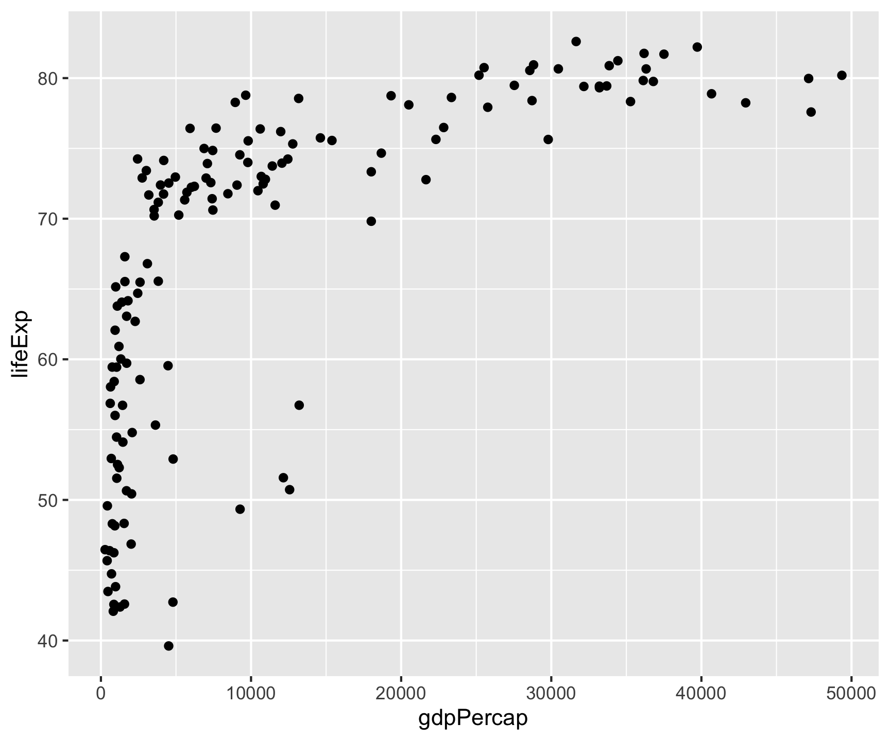
All ggplot2 plots follow the same structure: data + aesthetics (which variables to visual properties) + geometry (what shape).
Key point: Aesthetic mappings in aes() describe how variables are visualized — placed in ggplot(), they apply globally to all layers.
Fixed vs. Data-Driven Aesthetics
Step 2: Layers

Step 2: Layers

Step 2: Layers
Step 2: Layers
Step 2: Layers
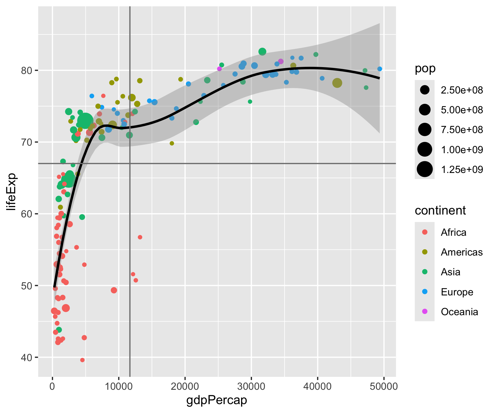
Layers compose — each + adds a new geometric object:
3. Labels
Step 3: Labels

Step 3: Labels
Step 3: Labels
Step 3: Labels
Step 3: Labels
Step 3: Labels
ggplot(data = gm2007, aes(x = gdpPercap, y = lifeExp)) +
geom_point(aes(color = continent, size = pop)) +
geom_smooth(color = "black", size = .5) +
geom_hline(yintercept = mean(gm2007$lifeExp), color = "gray") +
geom_vline(xintercept = mean(gm2007$gdpPercap), color = "gray") +
labs(title = "Per capita GDP versus life expectency in 2007",
x = "Per Capita GDP",
y = "Life Expectancy",
caption = "Based on Hans Rosling Plots",
subtitle = 'Data Source: Gapminder',
color = "",
size = "Population")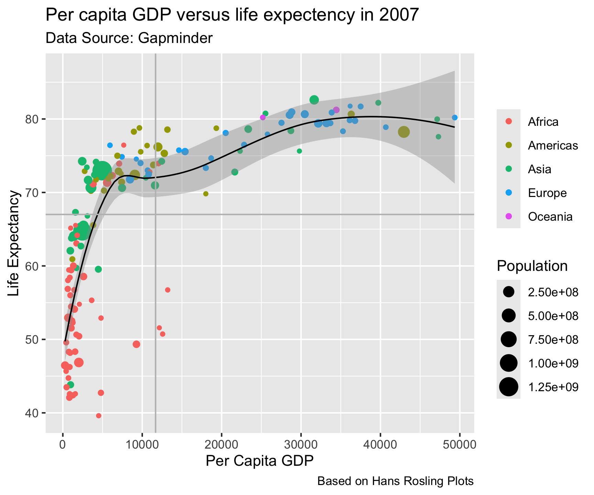
- Now that you have drawn the main parts of the graph. You might want to add labs that clarify what is being shown.
Step 4: Facets

Step 4: Facets

Step 4: Facets

Step 4: Facets
Step 4: Facets
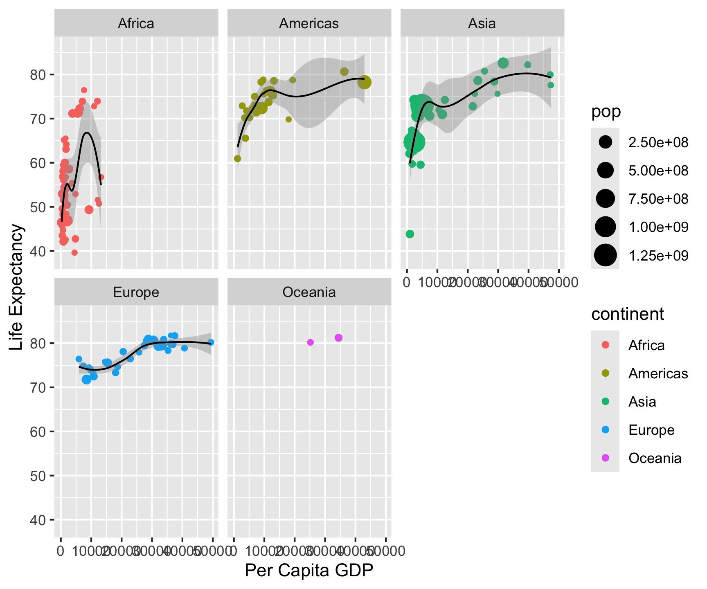
Split one plot into many by a categorical variable:
facet_wrap() vs. facet_grid()

facet_wrap(~x): one faceting variable, auto-wraps into rows/columns — flexible layoutfacet_grid(y~x): two faceting variables, strict row-column grid — enforces structure
Use facet_wrap() for many categories without hierarchy; facet_grid() for structured two-way comparisons.
5. Theme
Great! Now we just need to polish our plots…
ggplot offers a themeing system:
elementsspecify the non-data elements that you can control. For example,
plot.titlecontrols the appearance of the plot title;axis.ticks.xcontrols the ticks on the x axis;legend.key.height, controls the height of the keys in the legend.
- Each
elementis associated with an element function, which describes the visual properties. For example,
element_text()sets the font size, color and face of text elements likeplot.title.
- The
theme()function which allows you to override default elements:
- For example
theme(plot.title = element_text(color = "red")).
Built in themes
Wow! That’s a lot :) Fortunately, ggplot comes with many default themes that set all of the theme elements to values designed to work together harmoniously.
#> [1] "theme_bw" "theme_classic" "theme_dark"
#> [4] "theme_get" "theme_gray" "theme_grey"
#> [7] "theme_light" "theme_linedraw" "theme_minimal"
#> [10] "theme_replace" "theme_set" "theme_sub_axis"
#> [13] "theme_sub_axis_bottom" "theme_sub_axis_left" "theme_sub_axis_right"
#> [16] "theme_sub_axis_top" "theme_sub_axis_x" "theme_sub_axis_y"
#> [19] "theme_sub_legend" "theme_sub_panel" "theme_sub_plot"
#> [22] "theme_sub_strip" "theme_test" "theme_update"
#> [25] "theme_void"theme_bw()
- All themes are functions_ that “precan” a specified set of rules:
theme_bw
#> function (base_size = 11, base_family = "", header_family = NULL,
#> base_line_size = base_size/22, base_rect_size = base_size/22,
#> ink = "black", paper = "white", accent = "#3366FF")
#> {
#> theme_grey(base_size = base_size, base_family = base_family,
#> header_family = header_family, base_line_size = base_line_size,
#> base_rect_size = base_rect_size, ink = ink, paper = paper,
#> accent = accent) %+replace% theme(panel.background = element_rect(fill = paper,
#> colour = NA), panel.border = element_rect(colour = col_mix(ink,
#> paper, 0.2)), panel.grid = element_line(colour = col_mix(ink,
#> paper, 0.92)), panel.grid.minor = element_line(linewidth = rel(0.5)),
#> strip.background = element_rect(fill = col_mix(ink, paper,
#> 0.851), colour = col_mix(ink, paper, 0.2)), complete = TRUE)
#> }
#> <bytecode: 0x12d1e86d8>
#> <environment: namespace:ggplot2>Built in Themes…
Built in Themes…

Built in Themes…

Built in Themes…
gm2007 %>%
ggplot(aes(x = gdpPercap, y = lifeExp)) +
geom_point(aes(color = continent, size = pop)) +
labs(title = "Per capita GDP versus life expectency in 2007",
x = "Per Capita GDP",
y = "Life Expectancy",
caption = "Based on Hans Rosling Plots",
subtitle = 'Data Source: Gapminder',
color = "",
size = "Population")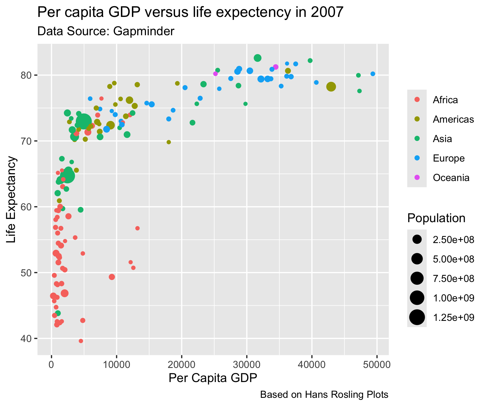
Built in Themes…
gm2007 %>%
ggplot(aes(x = gdpPercap, y = lifeExp)) +
geom_point(aes(color = continent, size = pop)) +
labs(title = "Per capita GDP versus life expectency in 2007",
x = "Per Capita GDP",
y = "Life Expectancy",
caption = "Based on Hans Rosling Plots",
subtitle = 'Data Source: Gapminder',
color = "",
size = "Population") +
theme_bw()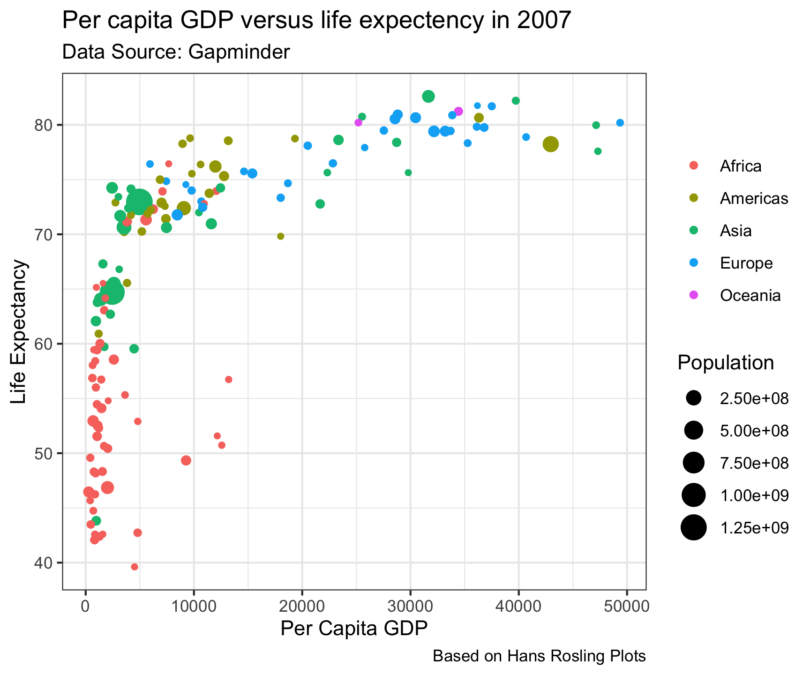
Built in Themes…
gm2007 %>%
ggplot(aes(x = gdpPercap, y = lifeExp)) +
geom_point(aes(color = continent, size = pop)) +
labs(title = "Per capita GDP versus life expectency in 2007",
x = "Per Capita GDP",
y = "Life Expectancy",
caption = "Based on Hans Rosling Plots",
subtitle = 'Data Source: Gapminder',
color = "",
size = "Population") +
theme_bw() +
theme_dark()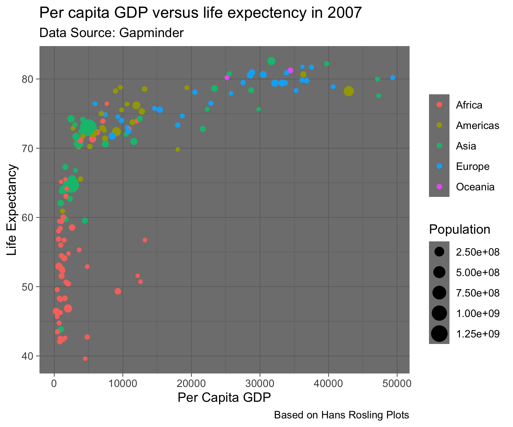
Built in Themes…
gm2007 %>%
ggplot(aes(x = gdpPercap, y = lifeExp)) +
geom_point(aes(color = continent, size = pop)) +
labs(title = "Per capita GDP versus life expectency in 2007",
x = "Per Capita GDP",
y = "Life Expectancy",
caption = "Based on Hans Rosling Plots",
subtitle = 'Data Source: Gapminder',
color = "",
size = "Population") +
theme_bw() +
theme_dark() +
theme_gray()
Built in Themes…
gm2007 %>%
ggplot(aes(x = gdpPercap, y = lifeExp)) +
geom_point(aes(color = continent, size = pop)) +
labs(title = "Per capita GDP versus life expectency in 2007",
x = "Per Capita GDP",
y = "Life Expectancy",
caption = "Based on Hans Rosling Plots",
subtitle = 'Data Source: Gapminder',
color = "",
size = "Population") +
theme_bw() +
theme_dark() +
theme_gray() +
theme_minimal()Built in Themes…
gm2007 %>%
ggplot(aes(x = gdpPercap, y = lifeExp)) +
geom_point(aes(color = continent, size = pop)) +
labs(title = "Per capita GDP versus life expectency in 2007",
x = "Per Capita GDP",
y = "Life Expectancy",
caption = "Based on Hans Rosling Plots",
subtitle = 'Data Source: Gapminder',
color = "",
size = "Population") +
theme_bw() +
theme_dark() +
theme_gray() +
theme_minimal() +
theme_light()ggtheme package…
ggtheme package…
ggtheme package…
ggtheme package…

ggtheme package…
library(ggthemes)
gm2007 %>%
ggplot(aes(x = gdpPercap, y = lifeExp)) +
geom_point(aes(color = continent, size = pop)) +
labs(title = "Per capita GDP versus life expectency in 2007",
x = "Per Capita GDP",
y = "Life Expectancy",
caption = "Based on Hans Rosling Plots",
subtitle = 'Data Source: Gapminder',
color = "",
size = "Population")
ggtheme package…
library(ggthemes)
gm2007 %>%
ggplot(aes(x = gdpPercap, y = lifeExp)) +
geom_point(aes(color = continent, size = pop)) +
labs(title = "Per capita GDP versus life expectency in 2007",
x = "Per Capita GDP",
y = "Life Expectancy",
caption = "Based on Hans Rosling Plots",
subtitle = 'Data Source: Gapminder',
color = "",
size = "Population") +
ggthemes::theme_stata()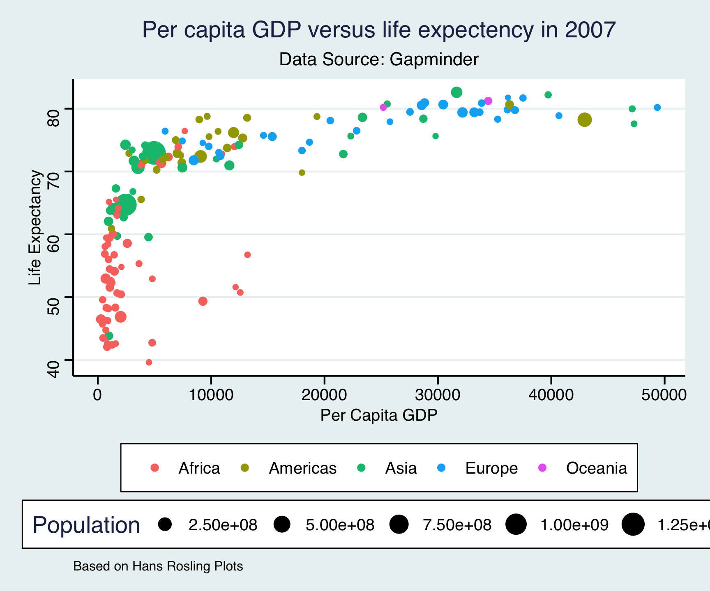
ggtheme package…
library(ggthemes)
gm2007 %>%
ggplot(aes(x = gdpPercap, y = lifeExp)) +
geom_point(aes(color = continent, size = pop)) +
labs(title = "Per capita GDP versus life expectency in 2007",
x = "Per Capita GDP",
y = "Life Expectancy",
caption = "Based on Hans Rosling Plots",
subtitle = 'Data Source: Gapminder',
color = "",
size = "Population") +
ggthemes::theme_stata() +
ggthemes::theme_economist()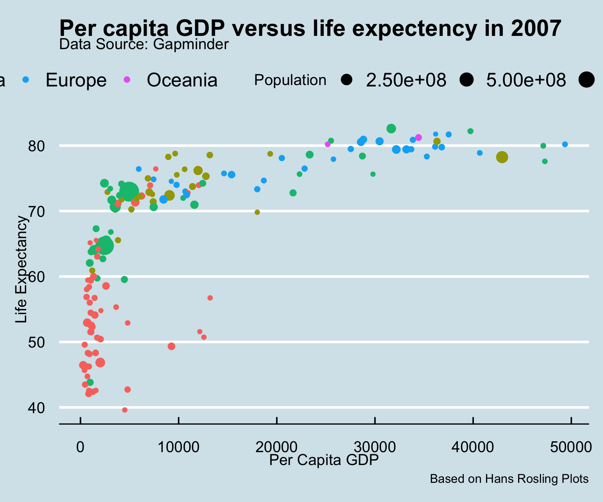
ggtheme package…
library(ggthemes)
gm2007 %>%
ggplot(aes(x = gdpPercap, y = lifeExp)) +
geom_point(aes(color = continent, size = pop)) +
labs(title = "Per capita GDP versus life expectency in 2007",
x = "Per Capita GDP",
y = "Life Expectancy",
caption = "Based on Hans Rosling Plots",
subtitle = 'Data Source: Gapminder',
color = "",
size = "Population") +
ggthemes::theme_stata() +
ggthemes::theme_economist() +
ggthemes::theme_economist_white()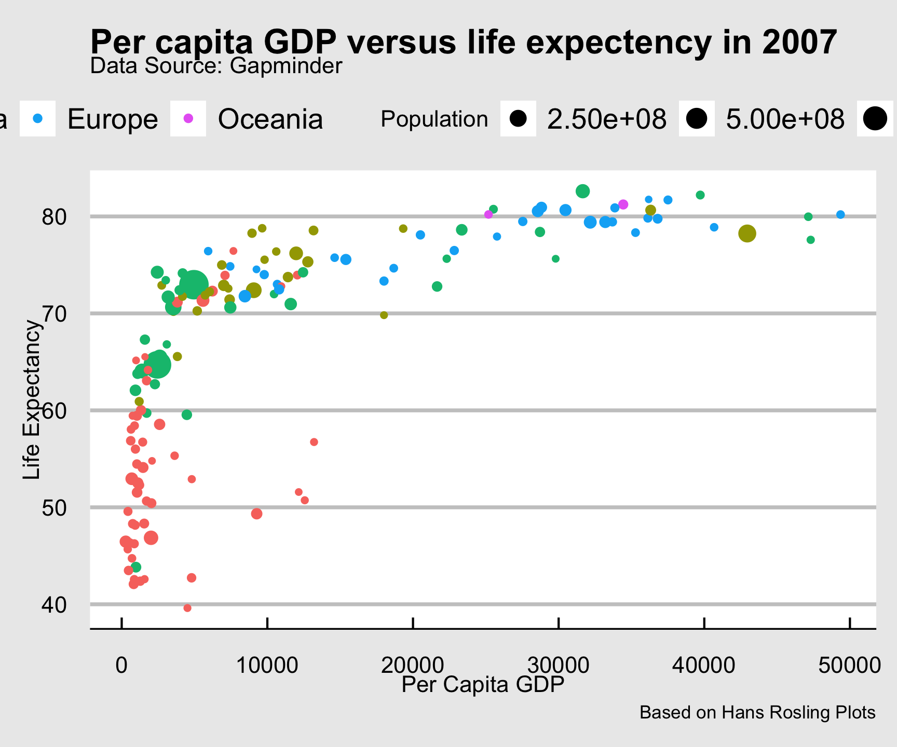
ggtheme package…
library(ggthemes)
gm2007 %>%
ggplot(aes(x = gdpPercap, y = lifeExp)) +
geom_point(aes(color = continent, size = pop)) +
labs(title = "Per capita GDP versus life expectency in 2007",
x = "Per Capita GDP",
y = "Life Expectancy",
caption = "Based on Hans Rosling Plots",
subtitle = 'Data Source: Gapminder',
color = "",
size = "Population") +
ggthemes::theme_stata() +
ggthemes::theme_economist() +
ggthemes::theme_economist_white() +
ggthemes::theme_fivethirtyeight()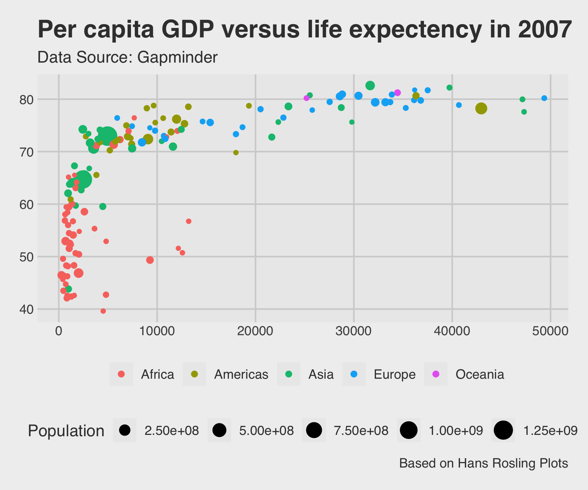
ggtheme package…
library(ggthemes)
gm2007 %>%
ggplot(aes(x = gdpPercap, y = lifeExp)) +
geom_point(aes(color = continent, size = pop)) +
labs(title = "Per capita GDP versus life expectency in 2007",
x = "Per Capita GDP",
y = "Life Expectancy",
caption = "Based on Hans Rosling Plots",
subtitle = 'Data Source: Gapminder',
color = "",
size = "Population") +
ggthemes::theme_stata() +
ggthemes::theme_economist() +
ggthemes::theme_economist_white() +
ggthemes::theme_fivethirtyeight() +
ggthemes::theme_gdocs()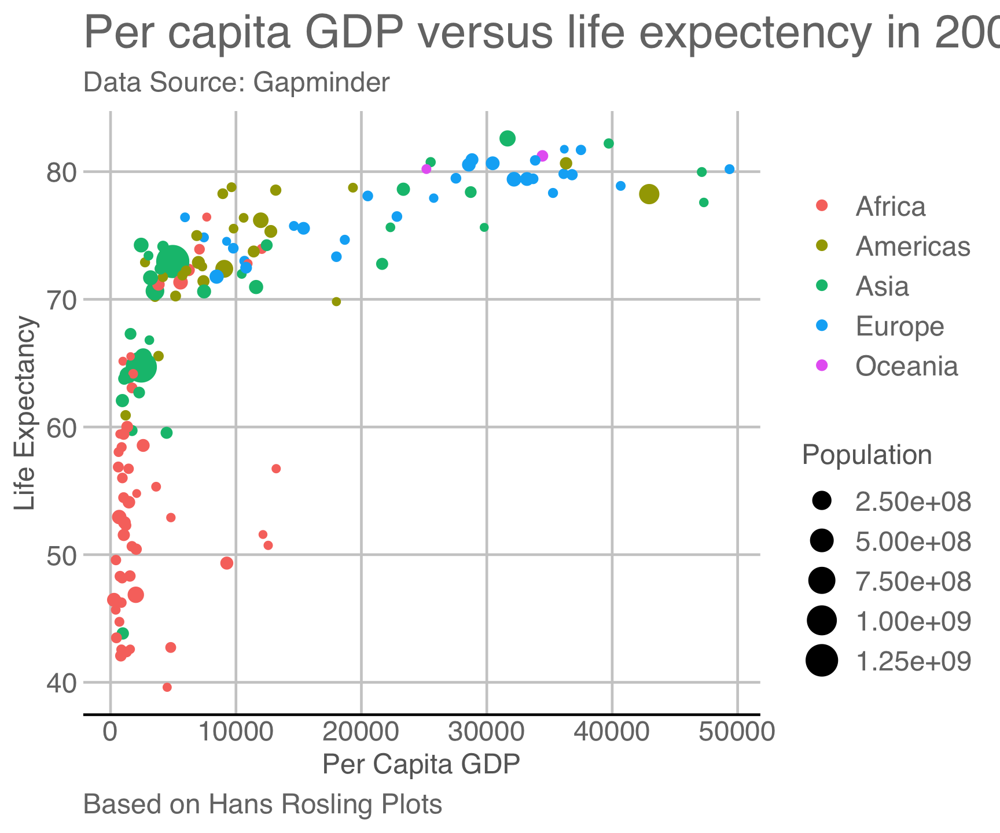
ggtheme package…
library(ggthemes)
gm2007 %>%
ggplot(aes(x = gdpPercap, y = lifeExp)) +
geom_point(aes(color = continent, size = pop)) +
labs(title = "Per capita GDP versus life expectency in 2007",
x = "Per Capita GDP",
y = "Life Expectancy",
caption = "Based on Hans Rosling Plots",
subtitle = 'Data Source: Gapminder',
color = "",
size = "Population") +
ggthemes::theme_stata() +
ggthemes::theme_economist() +
ggthemes::theme_economist_white() +
ggthemes::theme_fivethirtyeight() +
ggthemes::theme_gdocs() +
ggthemes::theme_excel()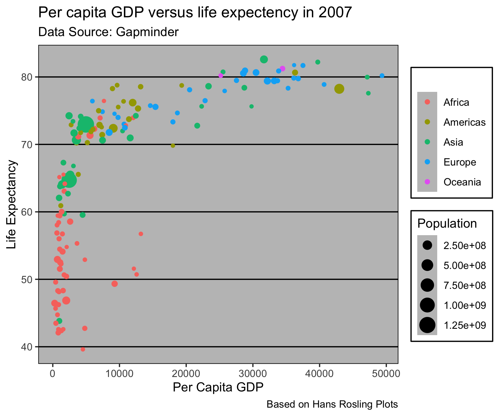
ggtheme package…
library(ggthemes)
gm2007 %>%
ggplot(aes(x = gdpPercap, y = lifeExp)) +
geom_point(aes(color = continent, size = pop)) +
labs(title = "Per capita GDP versus life expectency in 2007",
x = "Per Capita GDP",
y = "Life Expectancy",
caption = "Based on Hans Rosling Plots",
subtitle = 'Data Source: Gapminder',
color = "",
size = "Population") +
ggthemes::theme_stata() +
ggthemes::theme_economist() +
ggthemes::theme_economist_white() +
ggthemes::theme_fivethirtyeight() +
ggthemes::theme_gdocs() +
ggthemes::theme_excel() +
ggthemes::theme_wsj()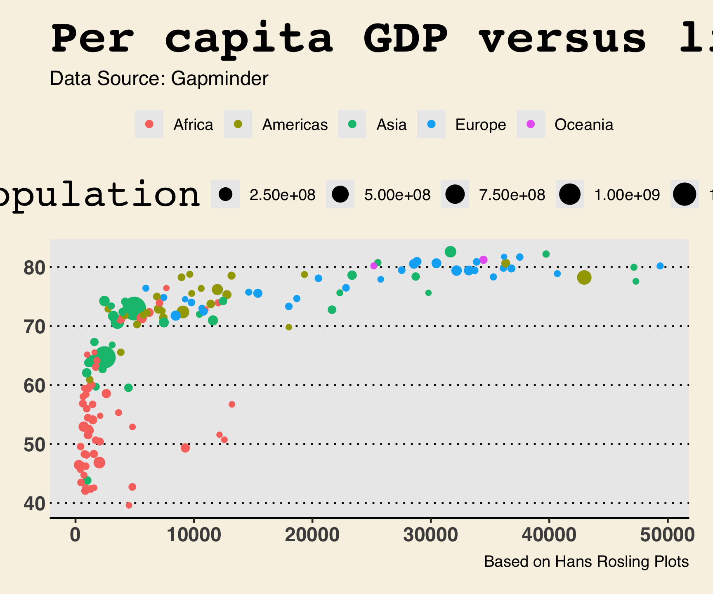
ggtheme package…
library(ggthemes)
gm2007 %>%
ggplot(aes(x = gdpPercap, y = lifeExp)) +
geom_point(aes(color = continent, size = pop)) +
labs(title = "Per capita GDP versus life expectency in 2007",
x = "Per Capita GDP",
y = "Life Expectancy",
caption = "Based on Hans Rosling Plots",
subtitle = 'Data Source: Gapminder',
color = "",
size = "Population") +
ggthemes::theme_stata() +
ggthemes::theme_economist() +
ggthemes::theme_economist_white() +
ggthemes::theme_fivethirtyeight() +
ggthemes::theme_gdocs() +
ggthemes::theme_excel() +
ggthemes::theme_wsj() +
ggthemes::theme_hc()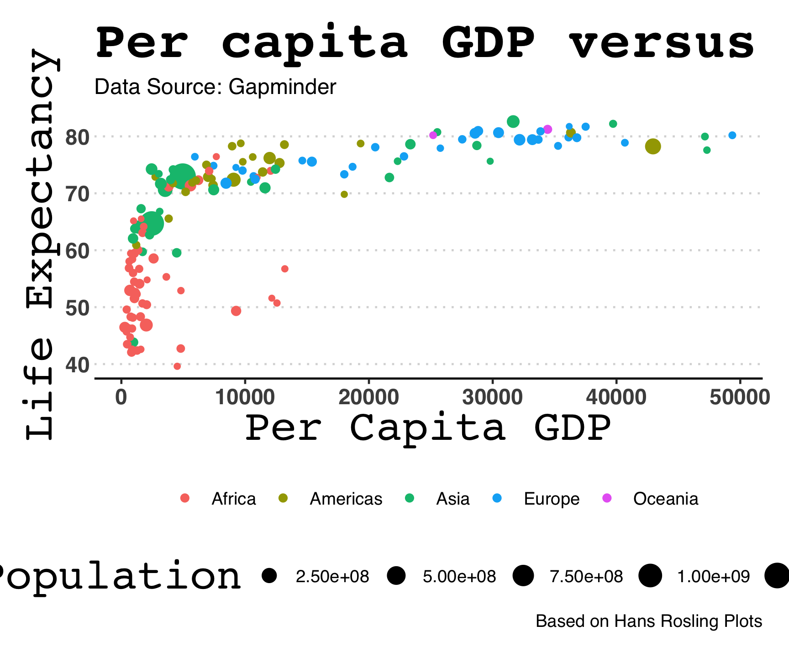
Saving Plots
ggplot outputs are objects — assign them, then save:
Tip
Always save with explicit width, height, and units. The default dimensions rarely match what you need for reports or publications. fig.retina = 3 in your chunk options gives you high-DPI output for web rendering.
Part 3: Relational Data
When One Table Is Not Enough
Real data rarely lives in a single tidy table. You will always need to combine information from multiple sources:
- Flow records from one table + watershed area from another
- Species counts from field surveys + climate data from NOAA
- County-level discharge + census population estimates
Multiple related tables are called relational data. The relations are as important as the data itself.
The Anatomy of a Join
Before writing a _join() call, answer three questions:
- What is the key? Which column(s) connect the two tables?
- What is the relationship? One-to-one, or one-to-many?
- What happens to non-matching rows? Keep them or drop them?
Keys
A key is the variable (or set of variables) that uniquely identifies an observation:
- Primary key: uniquely identifies rows in its own table
- Foreign key: uniquely identifies rows in another table
name is the primary key in both tables and the foreign key that connects them.
The Four (primary) Joins
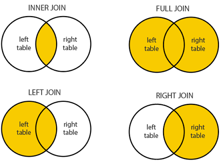
| Function | Keeps rows from… | Non-matches |
|---|---|---|
left_join(x, y) |
All of x |
y columns → NA |
right_join(x, y) |
All of y |
x columns → NA |
inner_join(x, y) |
Only rows matching in both | Dropped |
full_join(x, y) |
Both tables | NAs on whichever side has no match |
Today’s Data:
Inner Join
Returns only rows with matches in both tables:
| name | band |
|---|---|
| Mick | Stones |
| John | Beatles |
| Paul | Beatles |
| name | plays |
|---|---|
| John | guitar |
| Paul | bass |
| Keith | guitar |
| name | band | plays |
|---|---|---|
| John | Beatles | guitar |
| Paul | Beatles | bass |
Mick has no instrument record → dropped. Keith has no band record → dropped.
Left Join
Returns all rows from the left table, NAs where no match in right:
| name | band |
|---|---|
| Mick | Stones |
| John | Beatles |
| Paul | Beatles |
| name | plays |
|---|---|
| John | guitar |
| Paul | bass |
| Keith | guitar |
| name | band | plays |
|---|---|---|
| Mick | Stones | NA |
| John | Beatles | guitar |
| Paul | Beatles | bass |
Mick kept, plays is NA. Keith dropped (not in left table).
Right Join
Returns all rows from the right table:
| name | band |
|---|---|
| Mick | Stones |
| John | Beatles |
| Paul | Beatles |
| name | plays |
|---|---|
| John | guitar |
| Paul | bass |
| Keith | guitar |
| name | band | plays |
|---|---|---|
| John | Beatles | guitar |
| Paul | Beatles | bass |
| Keith | NA | guitar |
Full Join
Returns all rows from both tables:
| name | band |
|---|---|
| Mick | Stones |
| John | Beatles |
| Paul | Beatles |
| name | plays |
|---|---|
| John | guitar |
| Paul | bass |
| Keith | guitar |
| name | band | plays |
|---|---|---|
| Mick | Stones | NA |
| John | Beatles | guitar |
| Paul | Beatles | bass |
| Keith | NA | guitar |
Everyone is kept. NAs fill missing values on either side.
The Silent Failure Modes
Important
Bad joins fail silently — your code runs, your result looks plausible, but the numbers are wrong.
Failure 1: Wrong join type
Using inner_join when you meant left_join silently drops rows. Your dataset shrinks and you may not notice until a downstream result is unexpectedly small.
Failure 2: Non-unique key
If the key column is not actually unique in one of the tables, every matching row gets duplicated. Your dataset grows and you may not notice.
Real Example: NWIS Flow + Site Metadata
# Two tables, one key
flow # site_no appears thousands of times (foreign key)
site_meta # site_no appears once per gauge (primary key)
# One-to-many join: one site_meta row fans out to thousands of flow rows
flow_meta <- flow |>
left_join(site_meta, by = "site_no")
# Verify
nrow(flow_meta) == nrow(flow) # row count unchanged?
sum(is.na(flow_meta$drain_area_va)) == 0 # no missing area values?
flow_meta |> # known value check
filter(site_no == "09380000") |>
distinct(site_no, drain_area_va) # should be ~111,800 mi²This is exactly the join you will perform in Lab 1.
Part 4: Tidy Data & Pivoting
The Same Data, Many Shapes
The same underlying data can be stored in multiple ways. Which is easiest to work with depends on what you want to do:
Wide format — one row per country:
#> # A tibble: 4 × 4
#> country year lifeExp gdpPercap
#> <fct> <int> <dbl> <dbl>
#> 1 Brazil 1952 50.9 2109.
#> 2 Brazil 2007 72.4 9066.
#> 3 India 1952 37.4 547.
#> # ℹ 1 more rowLong format — one row per country-year-metric:
#> # A tibble: 8 × 4
#> country year metric value
#> <fct> <int> <chr> <dbl>
#> 1 Brazil 1952 lifeExp 50.9
#> 2 Brazil 1952 gdpPercap 2109.
#> 3 Brazil 2007 lifeExp 72.4
#> # ℹ 5 more rowsTidy Data: The Standard

Three rules that tidyverse tools assume:
- Each variable has its own column
- Each observation has its own row
- Each value has its own cell
In practice: put each dataset in a tibble, put each variable in a column. The rest follows.
The World Is Messy
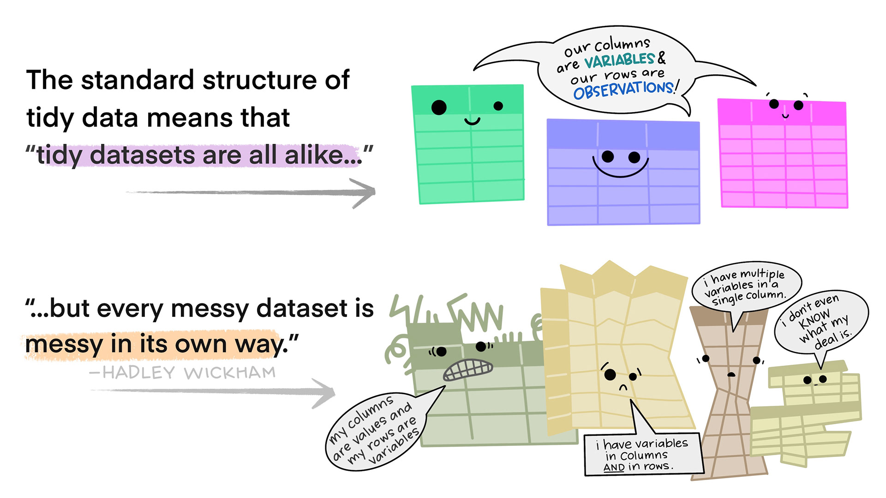
Real data almost never arrives tidy. Two common problems:
- A variable is spread across multiple columns — column names are values, not variable names
- An observation is scattered across multiple rows — a single record spans several rows
tidyr (part of tidyverse) fixes both.
pivot_longer() — Wide to Long
When column names are actually values of a variable, pivot longer:
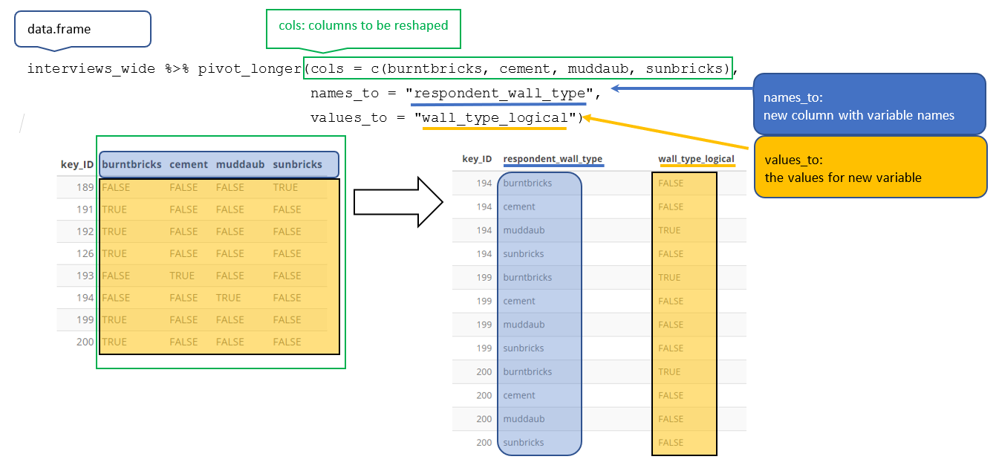
lifeExp_wide <- gapminder |>
filter(country %in% c("India", "Brazil")) |>
select(country, year, lifeExp) |>
pivot_wider(names_from = year, values_from = lifeExp)
lifeExp_wide
#> # A tibble: 2 × 13
#> country `1952` `1957` `1962` `1967` `1972` `1977` `1982` `1987` `1992` `1997`
#> <fct> <dbl> <dbl> <dbl> <dbl> <dbl> <dbl> <dbl> <dbl> <dbl> <dbl>
#> 1 Brazil 50.9 53.3 55.7 57.6 59.5 61.5 63.3 65.2 67.1 69.4
#> 2 India 37.4 40.2 43.6 47.2 50.7 54.2 56.6 58.6 60.2 61.8
#> # ℹ 2 more variables: `2002` <dbl>, `2007` <dbl>pivot_longer() in Action
pivot_wider() — Long to Wide
When one observation is scattered across multiple rows, pivot wider:

When to Use Each Format
Long format is better for:
ggplot2— it expects one row per observationgroup_by()+summarize()— aggregating over a variable- Time series with multiple variables
- Repeated measures data
Wide format is better for:
- Linear models where each variable is a predictor
- Sharing data with non-technical audiences
- Correlation matrices
- When few variables and many observations
Pivot Within a Pipeline
Pivot Within a Pipeline
#> # A tibble: 24 × 6
#> country continent year lifeExp pop gdpPercap
#> <fct> <fct> <int> <dbl> <int> <dbl>
#> 1 Canada Americas 1952 68.8 14785584 11367.
#> 2 Canada Americas 1957 70.0 17010154 12490.
#> 3 Canada Americas 1962 71.3 18985849 13462.
#> # ℹ 21 more rowsPivot Within a Pipeline
Pivot Within a Pipeline
#> # A tibble: 48 × 4
#> country year metric value
#> <fct> <int> <chr> <dbl>
#> 1 Canada 1952 lifeExp 68.8
#> 2 Canada 1952 gdpPercap 11367.
#> 3 Canada 1957 lifeExp 70.0
#> # ℹ 45 more rowsPivot Within a Pipeline
Pivot Within a Pipeline
Pivot Within a Pipeline
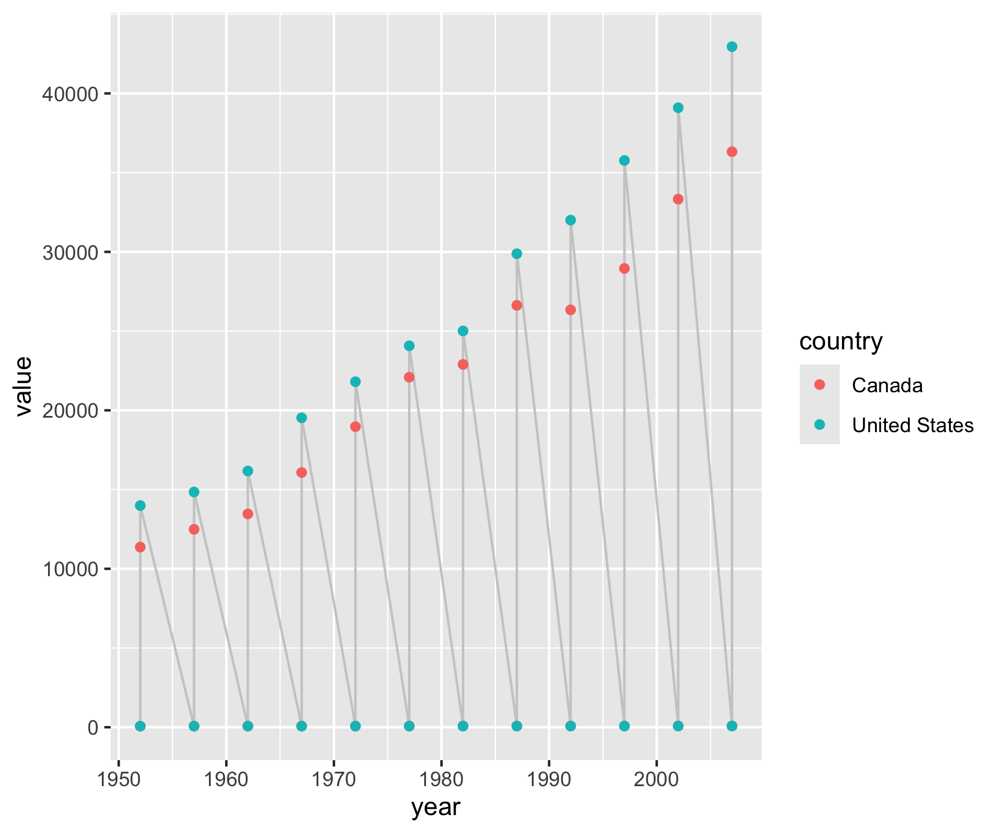
Pivot Within a Pipeline
gapminder |>
filter(country %in% c("Canada", "United States")) |>
select(country, year, lifeExp, gdpPercap) |>
pivot_longer(cols = c(lifeExp, gdpPercap),
names_to = "metric",
values_to = "value") |>
ggplot(aes(x = year, y = value)) +
geom_line(color = "gray80") +
geom_point(aes(color = country)) +
facet_grid(metric ~ country, scales = "free_y")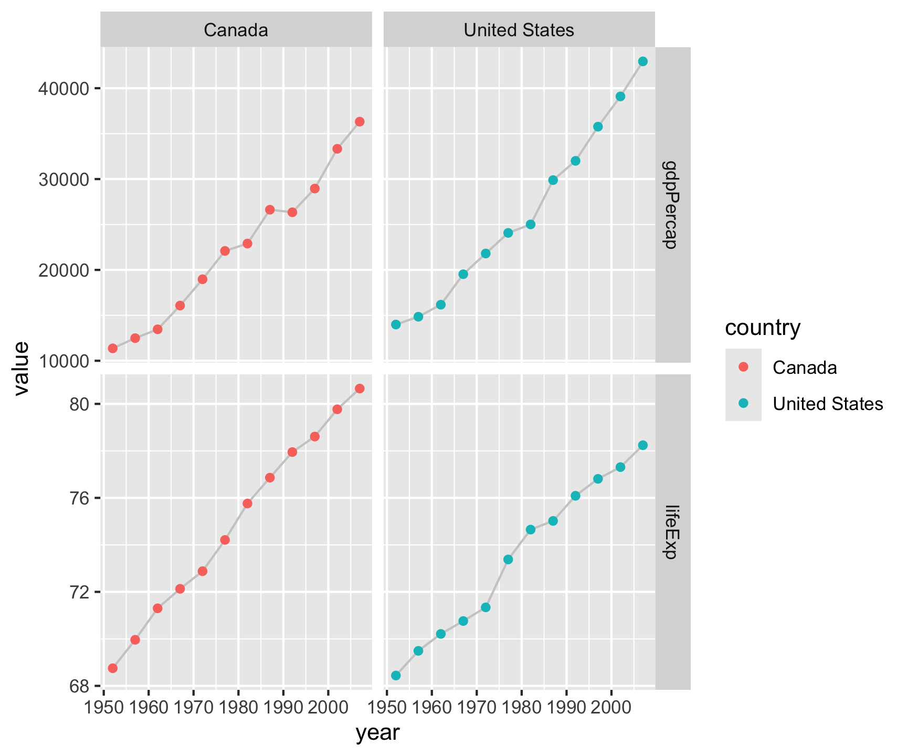
Pivot Within a Pipeline
gapminder |>
filter(country %in% c("Canada", "United States")) |>
select(country, year, lifeExp, gdpPercap) |>
pivot_longer(cols = c(lifeExp, gdpPercap),
names_to = "metric",
values_to = "value") |>
ggplot(aes(x = year, y = value)) +
geom_line(color = "gray80") +
geom_point(aes(color = country)) +
facet_grid(metric ~ country, scales = "free_y") +
labs(x = "", y = "",
title = "North America: GDP & Life Expectancy",
subtitle = "1950–2007",
caption = "Data: Gapminder R package")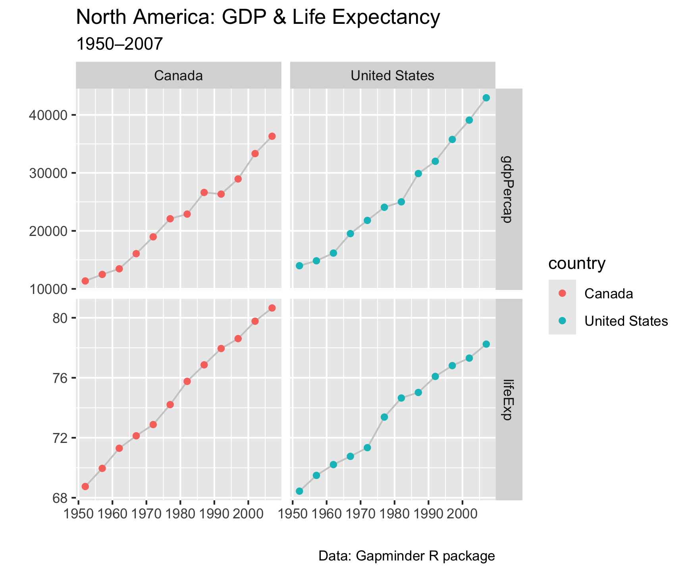
Pivot Within a Pipeline
gapminder |>
filter(country %in% c("Canada", "United States")) |>
select(country, year, lifeExp, gdpPercap) |>
pivot_longer(cols = c(lifeExp, gdpPercap),
names_to = "metric",
values_to = "value") |>
ggplot(aes(x = year, y = value)) +
geom_line(color = "gray80") +
geom_point(aes(color = country)) +
facet_grid(metric ~ country, scales = "free_y") +
labs(x = "", y = "",
title = "North America: GDP & Life Expectancy",
subtitle = "1950–2007",
caption = "Data: Gapminder R package") +
theme_linedraw()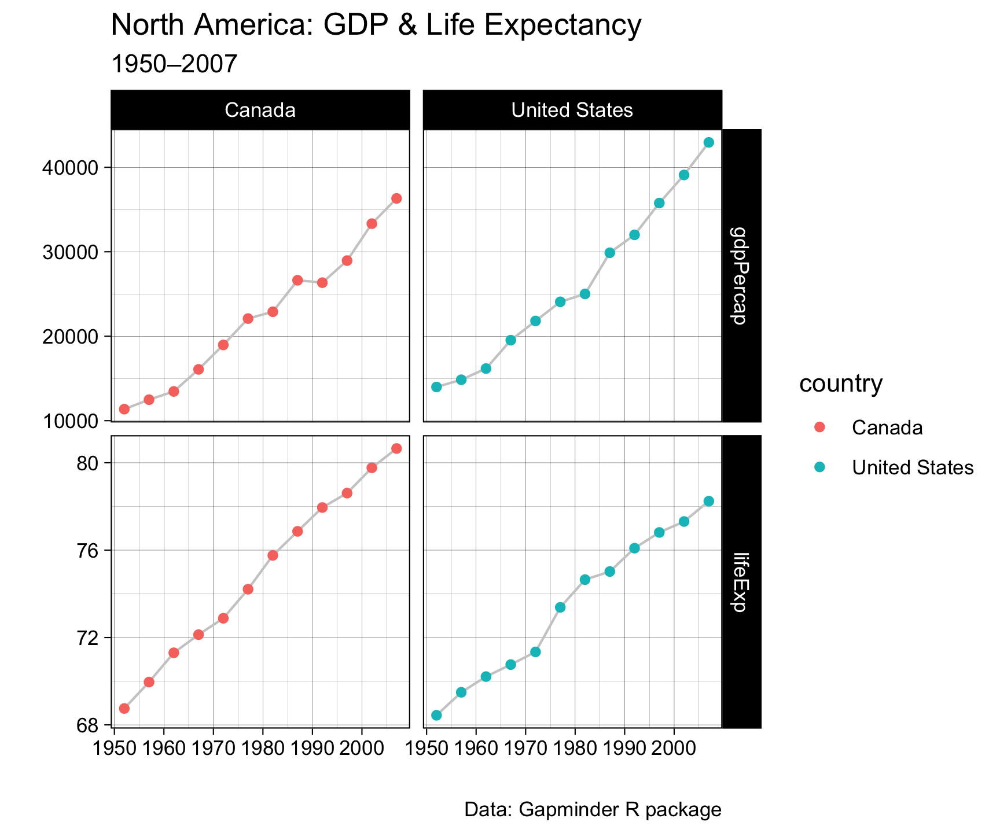
Pivot Within a Pipeline
gapminder |>
filter(country %in% c("Canada", "United States")) |>
select(country, year, lifeExp, gdpPercap) |>
pivot_longer(cols = c(lifeExp, gdpPercap),
names_to = "metric",
values_to = "value") |>
ggplot(aes(x = year, y = value)) +
geom_line(color = "gray80") +
geom_point(aes(color = country)) +
facet_grid(metric ~ country, scales = "free_y") +
labs(x = "", y = "",
title = "North America: GDP & Life Expectancy",
subtitle = "1950–2007",
caption = "Data: Gapminder R package") +
theme_linedraw() +
theme(legend.position = "none",
axis.text.x = element_text(angle = 90, face = "bold"))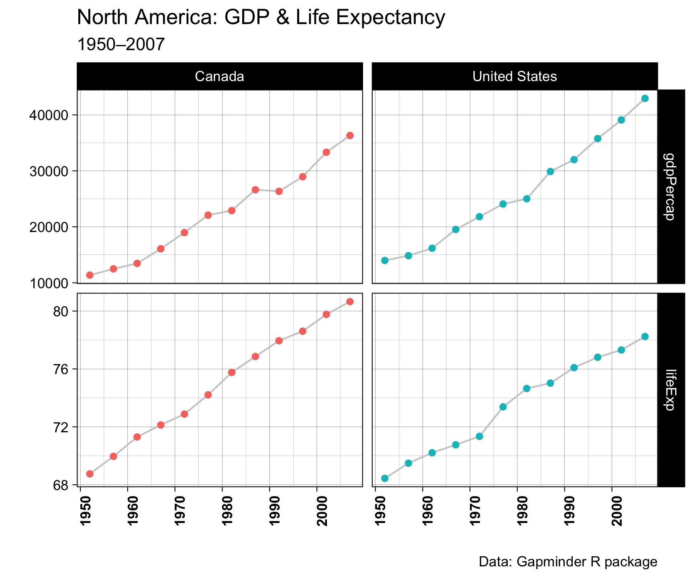
The real power: wrangling shape and visualization in one chain:
Quarto: Scientific Authoring for the Modern Era
What is Quarto?
Quarto is the evolution of R Markdown — same authoring paradigm, modernized syntax and expanded scope:
- R Markdown (2014–): Documents combining code + prose, renders to HTML/PDF/Word
- Quarto (2022–): Same concept, better syntax, works with R, Python, Julia, Observable
Everything you did in lab 0 still applies. Three things changed:
- Code chunk options: New YAML-style syntax
- Callout blocks: Native features, simpler markup
- Rendering: Universal command-line tool
Old vs. New: Chunk Options
R Markdown syntax:
Quarto uses YAML-style options — one per #| line. Clearer, easier to scan.
Built-in Formatting: Callouts
Old way (complicated divs):
Quarto way (same syntax, more types):
Types: callout-note, callout-tip, callout-warning, callout-important, callout-caution
We’ve been using these all along — now you know how to author them.
How to Render & Preview
Preview live (auto-reload on save):
Output opens in your browser.
Render to static HTML:
Output lands in docs/ and is ready to share.
In RStudio: click Render button → preview in Viewer pane.
The Key Takeaway
You will author and submit assignments in Quarto. The workflow:
- Header (YAML) → sets title, output format, theme
- Code chunks → execute, embed output, with
#|options - Callouts → highlight key points
- Prose → explains the data story
This deck is a Quarto reveal.js presentation. Lab assignments are Quarto HTML documents. Same tool, different output format.
Project Configuration: _quarto.yml
Every Quarto project has a _quarto.yml file that sets global defaults.
Here’s the one for this course:
project:
type: website
website:
title: "ESS 523c: Environmental Data Science"
site-url: https://github.com/mikejohnson51/csu-ess-523c
navbar:
left:
- href: index.qmd
text: Home
- href: labs/lab-01.qmd
text: Lab 1
format:
html:
theme: cosmo
toc: true
code-fold: falseWhen you quarto render, it reads these defaults and applies them to every .qmd file in the project.
Connecting to Lab 1
Everything You Just Learned — Applied
Lab 1 uses every concept from today on real federal water data:
| Today | Lab 1 |
|---|---|
filter(), mutate(), lag() |
Daily flow delta, threshold flags |
group_by() + summarize() |
Annual water year totals, seasonal summaries |
arrange(), slice_max() |
Top 5 gauges by discharge |
left_join() + verify |
Flow records + site metadata |
pivot_longer() |
Seasonal anomaly visualization |
ggplot() + facets + themes |
Heatmap, Lees Ferry time series, patchwork map |
The data source is dataRetrieval — a USGS package that wraps the same REST API URLs we discussed in lecture yesterday. The workflow: pull → tidy → wrangle → visualize → model.
Before Next Class
Lab 1 is due next Wednesday
All the tools are now in your hands. The data is live. Start early — the data pull takes a few minutes the first time.
Next Topic
Week 2: Vector Spatial Data
You will apply these same wrangling skills to geometries and spatial features. The sf package treats spatial features as data frames. Everything you learned today will carry through!
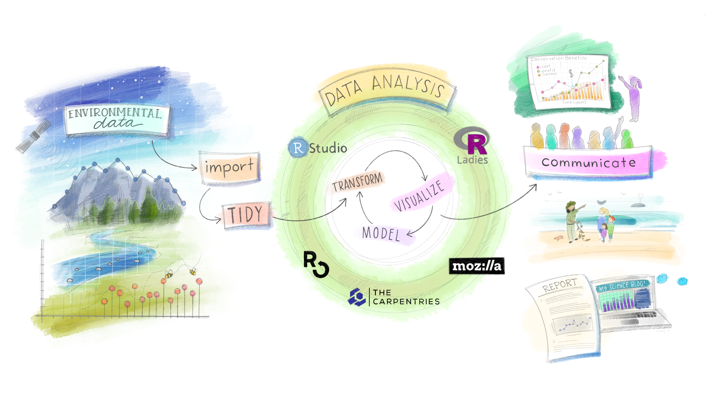